Today, we’ll cover three topics to help you prepare your plots for publication. Specifically, we’ll have figures for scientific publications in mind, and will cover:
Formatting plots – theme presets and customizing plot appearance with ggplot’s theme()
Multi-panel layouts – with the patchwork package
Saving plots to file – with ggplot’s ggsave()
1.2 Setup
Loading packages
Like in the previous ggplot2 sessions, we’ll load two packages: the tidyverse, which includes ggplot2, and palmerpenguins, which contains the penguins dataset we’ve been working with:
library(tidyverse)
── Attaching core tidyverse packages ──────────────────────── tidyverse 2.0.0 ──
✔ dplyr 1.1.4 ✔ readr 2.1.5
✔ forcats 1.0.1 ✔ stringr 1.5.2
✔ ggplot2 4.0.0 ✔ tibble 3.3.0
✔ lubridate 1.9.4 ✔ tidyr 1.3.1
✔ purrr 1.1.0
── Conflicts ────────────────────────────────────────── tidyverse_conflicts() ──
✖ dplyr::filter() masks stats::filter()
✖ dplyr::lag() masks stats::lag()
ℹ Use the conflicted package (<http://conflicted.r-lib.org/>) to force all conflicts to become errors
library(palmerpenguins)
Attaching package: 'palmerpenguins'
The following objects are masked from 'package:datasets':
penguins, penguins_raw
We’ll need two additional packages later on, but we’ll install and load these along the way.
A base plot
We’ll use a scatterplot of the penguins dataset as our running example throughout – assigning the plot to object p, so we can keep layering onto it without retyping everything:
p <- penguins |>drop_na() |># Get rid of rows with NAsggplot(aes(x = flipper_length_mm, y = body_mass_g, fill = species)) +geom_point(shape =21, size =2) +scale_fill_brewer(palette ="Dark2") +scale_y_continuous(labels = scales::label_comma()) +labs(x ="Flipper length (mm)", y ="Body mass (g)")p
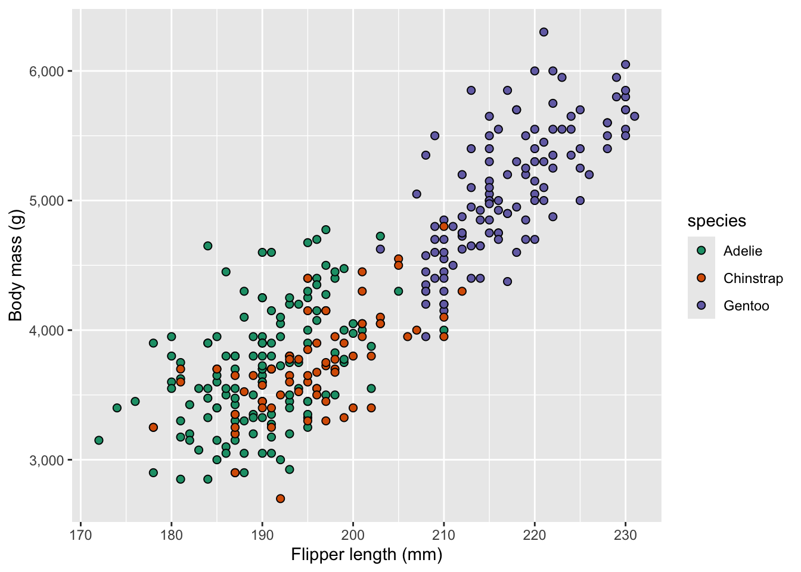
A couple of notes about the plot above:
I did not give the plot a title, because these are not typically present in figures in scientific papers
I used shape = 21 to get points with a fill color and black border, which I like for scatterplots
A trick we didn’t covered in the last few weeks is scales::label_comma() to add thousand-separator commas for readability. Very similar scales:: functions are available for formatting axes in other ways, e.g. label_percent() for percentages, label_dollar() for prices, etc.
2 Formatting plots
The default ggplot2 look is fine for quick exploration, but can be improved on for publication. For example, we likely don’t want a gray background and may need larger text. There are two main tools for formatting your plots:
Theme presets — functions like theme_bw() that swap out the whole look at once
theme() — fine-grained control over individual elements
2.1 Theme preset options
ggplot2 ships with several built-in theme functions. Here are some of the most useful alternatives to the default (which is called theme_gray()):
Function
Description
theme_bw()
White background, grey gridlines, black border
theme_classic()
White background, no gridlines, axis lines only
theme_minimal()
White background, minimal gridlines, no border
theme_void()
Completely empty — good for maps or diagrams
Let’s compare a few:
p +theme_bw()
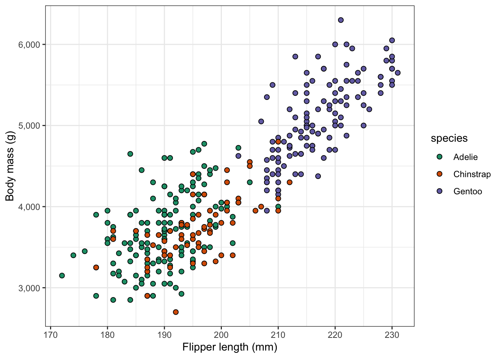
p +theme_classic()
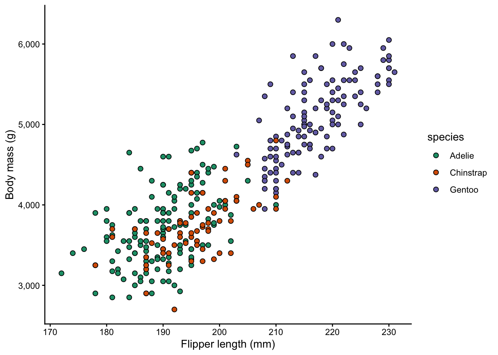
p +theme_minimal()
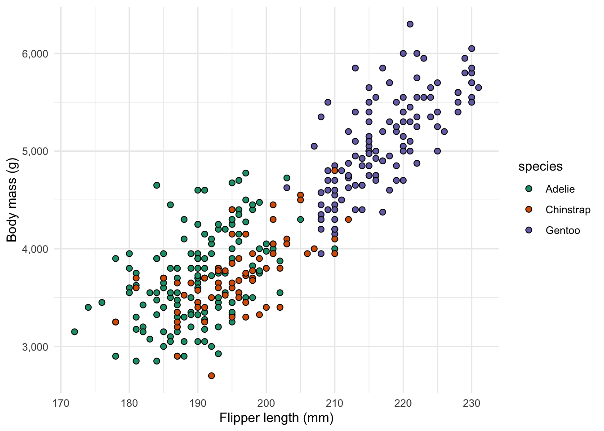
2.2 Scaling all text sizes with base_size()
All theme preset functions accept a base_size argument that scales the size of text and points in the plot – the larger the value, the larger the text (the default value is 11):
p +theme_classic(base_size =10)
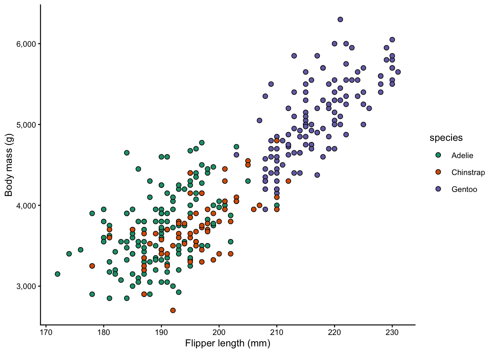
p +theme_classic(base_size =15)
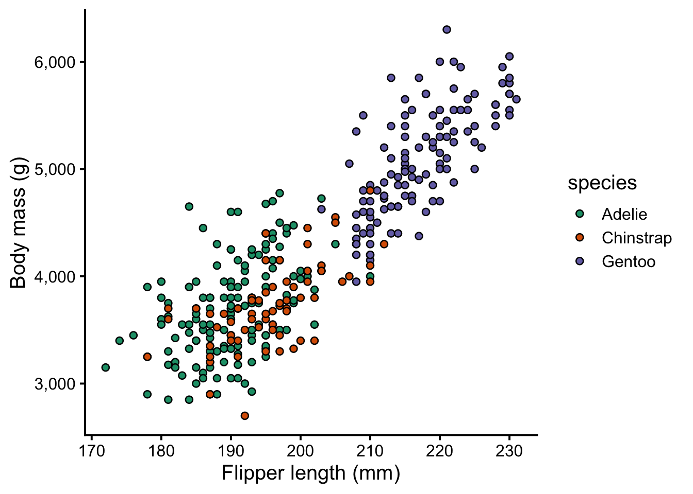
Note that this doesn’t mean all text will have the same size: instead, it is a scaling factor. So, axis titles will still remain similarly larger than axis text at tick labels, regardless of the base_size().
2.3 Customizing with theme()
Preset themes get you most of the way there, but theme() lets you adjust individual elements. You layer it on top of a preset:
p +theme_classic() +theme(...)
One example of a theme() call:
theme(legend.title =element_text(face ="bold"))
The theme() function has dozens of arguments to adjust elements such as legend.title, axis.text, panel.background, and so on. What makes its usage perhaps a bit overwhelming at first is that you will also need to know the type of element you want to adjust, which is specified with element_*() functions:
Element type
What it controls
element_text()
Applies to text and adjusts font size, face, color, angle, alignment
element_line()
Applies to lines and adjusts Line color, size, linetype
element_rect()
Applies to rectangles (panels, legend box, etc.) and adjusts their fill and border
element_blank()
This is used to removes an element entirely
Below, we’ll see some examples of several of these.
Text size and style
You may want to emphasize the axis titles and legend title by making them bold:
p +theme_classic(base_size =13) +theme(axis.title =element_text(size =14, face ="bold.italic"),legend.title =element_text(face ="bold") )
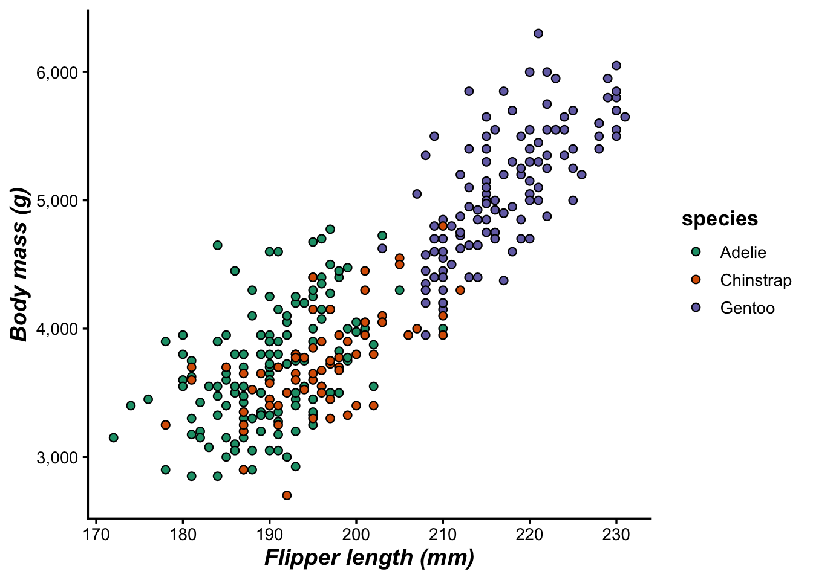
Text options
face accepts "plain", "bold", "italic", or "bold.italic"
axis.title controls both axes; use axis.title.x or axis.title.y to target one
Legend position
By default, the legend is to the right of the plot. That’s fine in many cases, but if you for example have a wide plot, you may want to place it at the top:
p +theme_classic(base_size =13) +theme(legend.position ="top")
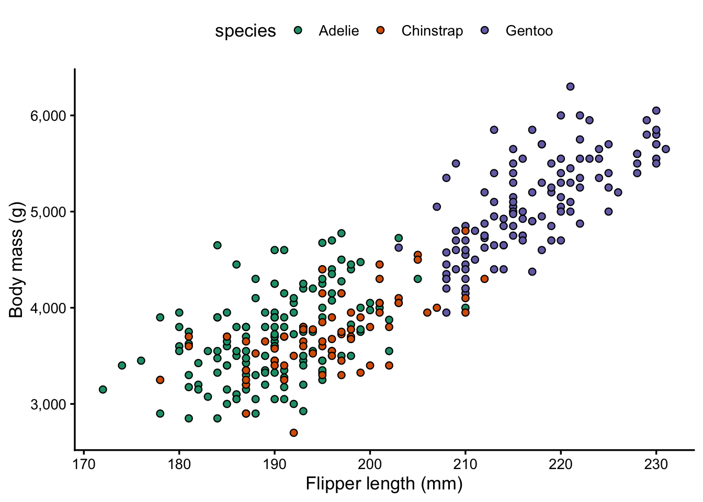
Want to place the legend inside the plot? (Click to expand)
You can also place the legend inside the plot by passing coordinates as a fraction of the plot area (0 = left/bottom, 1 = right/top):
I like theme_bw() because of the box it draws around the plot, but think the gridlines are a bit excessive and distracting. You can remove gridlines selectively rather than switching themes wholesale:
p +theme_bw() +theme(panel.grid.minor =element_blank(),panel.grid.major.x =element_blank(),panel.grid.major.y =element_line(linetype ="longdash", linewidth =0.5) )
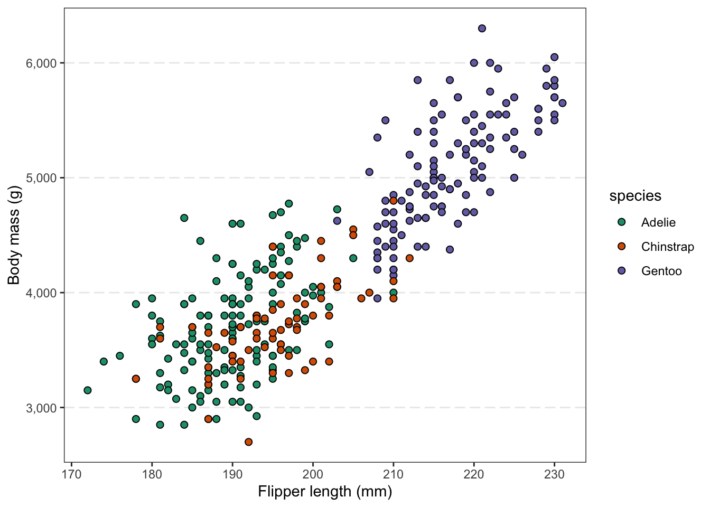
Above:
We turned off all “minor” gridlines (which are in between axis tickmarks),
Turned off “major” gridlines (which are at the tickmarks) for the x-axis
For the sake of showing element_line() in action, changed the formatting major gridlines on the y-axis
Setting a default theme for the whole session
If you make a bunch of figures with a single script, and want a consistent look across all of them, it can be tedious to add the same theme_*() call to every plot.
Instead, at the top of the script, you can set a default with theme_set():
theme_set(theme_classic(base_size =13))
After this, every new plot will use theme_classic() automatically. You can further customize with theme_update() to set specific elements globally:
Let’s see this in action: make sure you have run the code above, and our next few plots should have the look defined above.
Exercise: Format according to your preferences
You may have your own ideas about how you’d like to format your plots, and that is fine! There is usually room for a personal touch, even in scientific publications.
Play around with scatterplot p, adding a theme_ preset and several theme() options, to create a plot styled the way you like.
If you are wondering how to change elements in ways we haven’t covered, feel free to ask us or the internet/genAI.
3 Multi-panel figures
The patchwork package allows you to combine multiple plots into a single multi-panel figure. This is something you might be used to doing with programs like Powerpoint or Illustrator. However, if you’re already making all the individual plots that should make up a figure in R, it is beneficial to also use R to combine them.
That way, you can easily rerun your code to recreate plots with some modifications. Otherwise, after any change, you’d have to put the plots back together in another program.
First, let’s install and load the package:
install.packages("patchwork")
library(patchwork)
Patchwork assumes that you have created and saved the individual plots as separate R objects. Let’s start by making three plots with the penguins dataset that we’ll combine later on:
To tell patchwork how to arrange these plots, the syntax is based on common mathematical operators. For example:
plot1 | plot2 puts two plots side-by-side
plot1 / plot2 stacks two plots vertically
(plot1 / plot2) | plot3) puts plot1 and plot2 on the top row, and plot3 on the bottom row
For example, to combine the three plots we just made, with the first (faceted) plot on top, and the other two side-by-side below it:
p_scatter / (p_bar | p_box)
Patchwork has quite a lot more functionality, and this is well-explained in various vignettes/tutorials on its website.
Here, we’ll just try one more feature, adding tags for the individual plots — where we tell patchwork about the type of numbering we would like (e.g. A-B-C vs. 1-2-3) by specifying the first character:
Put the faceted plot (currently A) on the bottom instead of the top row
Improve the axis labels
Improve/modify the formatting of the individual plots in other ways you see fit
Bonus Exercise: Create your own multi-panel figure
Try to recreate this figure:
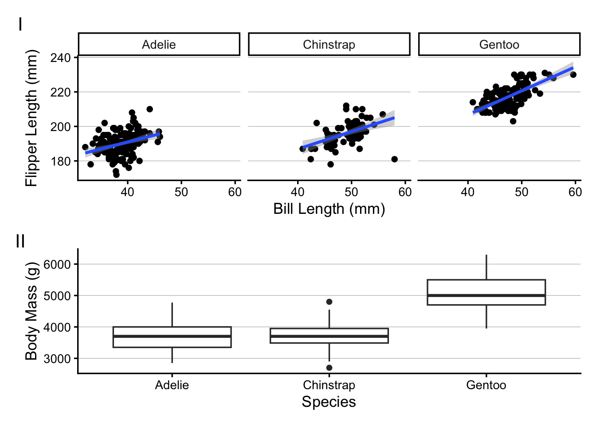
Click here to see the the solution
p_bill_flipper <- penguins |>ggplot(aes(x = bill_length_mm, y = flipper_length_mm)) +geom_point() +facet_wrap(~species) +geom_smooth(method ="lm") +labs(x ="Bill Length (mm)", y ="Flipper Length (mm)")p_mass_yr <- penguins |>ggplot(aes(x = species, y = body_mass_g)) +geom_boxplot() +labs(x ="Species", y ="Body Mass (g)")p_bill_flipper / p_mass_yr +plot_annotation(tag_levels ='I')
4 Saving plots to file
So far, we printed plots to the screen in RStudio but did not save them to file. You may have noticed the “Export” button in the Plots pane — it works, but a more flexible and reproducible approach is the ggsave() function.
4.1 Basic usage
Tell ggsave() about the filename and the plot you want to save:
ggsave(filename ="plot.png", plot = p)
Saving 7 x 5 in image
The file type is determined by the extension you provide. Above, we used PNG, but there are other options, as we’ll see in a bit.
We did not specify the width and height of the figure above, so it reports saving it at a default size of 7 × 5 inches.
Saving plots without specifying the plot
By default, ggsave() saves the last plot you produced, and you only need to specify the filename:
ggsave(filename ="plot.png")
This can e.g. be handy because you may not have saved your plot to an object.
Saving the file elsewhere on your computer
In both cases above, the file would be saved to the folder that represents your current “working directory” (directory = folder) in R. But you can save the file to any location on your computer by specifying the path as part of the filename:
# Save to a "figures" subfolder in the current working directory:ggsave(filename ="figures/plot.png", plot = p)# Save to a specific folder on your computer:ggsave(filename ="C:/Users/YourName/Documents/figures/plot.png", plot = p)
The figure’s size may not seem to matter much, because you could always resize the figure on the computer, right? But it matters quite a bit: for example, for the aspect ratio and the relative text size, as we’ll see below.
Aspect ratio
The width relative to the height, somewhat obviously, determines the figure’s aspect ratio – this can be useful to customize.
Above, our figure is 50% wider than it is high, and that is sensible…
Let’s also try saving the same plot with a different aspect ratio:
Here is what the resulting figures should look like:
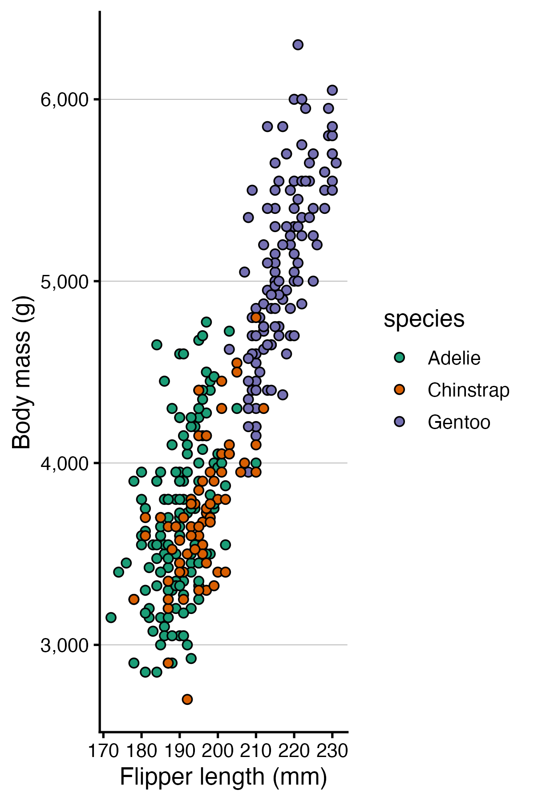
Relative text size
Text and points do not scale with the figure — they stay at their absolute sizes (in points/mm). This means:
A plot saved at 3 × 3 will have large-looking text relative to the data
A plot saved at 10 × 8 will have small-looking text
This behavior may seem strange but is actually useful: if your text looks too large or too small in the saved file, you can adjust width and height rather than modifying the plotting code.
Let’s see this in action, too:
# "Small" figure — text will look relatively largeggsave(filename ="small.png", plot = p_combined, width =4.5, height =3)# "Large" figure — text will look relatively smallggsave(filename ="large.png", plot = p_combined, width =9, height =6)
Here is what the resulting figures should look like:
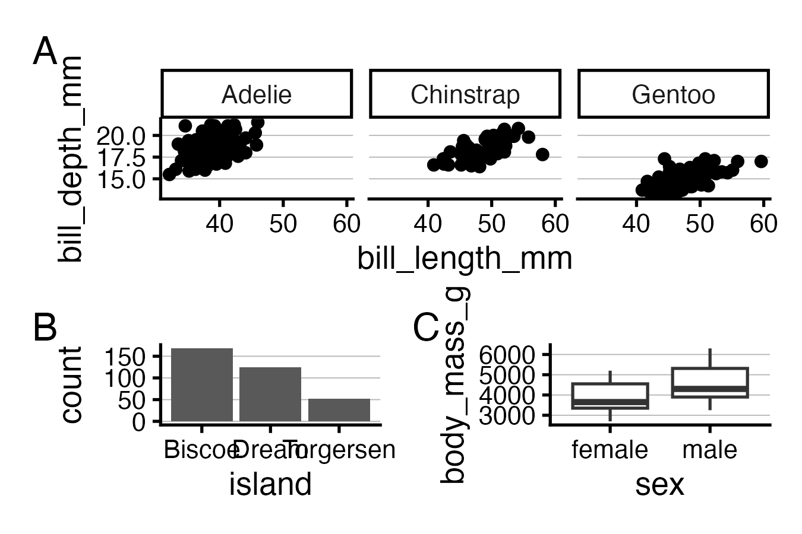
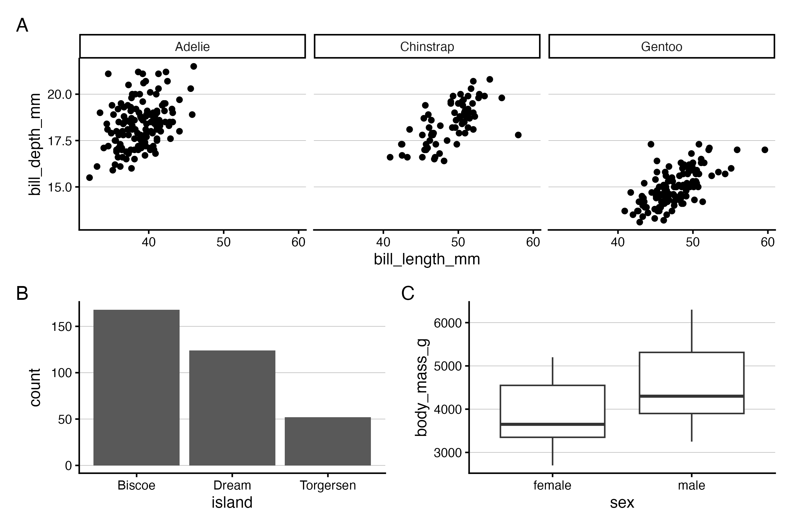
4.3 Raster vs. vector formats
When saving a figure, you have two fundamentally different types of format to choose from:
Raster formats (PNG, JPEG, TIFF) store the image as a grid of pixels.
Quality is fixed at save time using the figure’s “resolution” — but zoom in far enough and you’ll see pixelation. Among these formats, TIFF is generally preferred for scientific publications while PNG may also work, while JPEG should typically be avoided.
Vector formats (SVG, PDF) store the image as geometric instructions — lines, curves, text.
They render sharply at any size, and text is selectable and searchable. Among these formats, SVG is generally preferred or scientific publications.
For publication, vector formats are generally preferable when the journal accepts them. Figures will be crisp at any print size, and editors or co-authors can make minor tweaks in a vector editor such as InkScape or Illustrator.
To save to SVG format, we need the svglite package – let’s install that:
install.packages("svglite")# (We don't need to load it with library() because ggsave() will use it # automatically when we save to SVG)
As mentioned above, the filetype is simply specified in ggsave() using the file extension. Earlier, we saved to PNG, so let’s now practice saving to SVG:
![]()